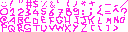
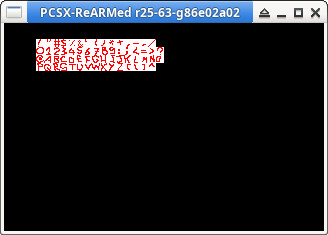

參考資訊：
https://psx.arthus.net/starting.html
https://github.com/ABelliqueux/nolibgs_hello_worlds/wiki/FONT
https://github.com/ABelliqueux/nolibgs_hello_worlds#installation
https://github.com/ABelliqueux/nolibgs_hello_worlds/wiki/(Archived)--Embedding-binary-data-in-your-psx-executable
main.c
#include <sys/types.h>
#include <stdio.h>
#include <libgte.h>
#include <libetc.h>
#include <libgpu.h>
#define FONTX 960
#define FONTY 0
extern unsigned long _binary_font_tim_start[];
extern unsigned long _binary_font_tim_end[];
extern unsigned long _binary_font_tim_length;
int main(int argc, char *argv[])
{
const int w = 320;
const int h = 240;
DISPENV disp = { 0 };
DRAWENV draw = { 0 };
u_long ot = 0;
TIM_IMAGE tim = { 0 };
char buf[32768] = { 0 };
CVECTOR fntColor = { 255, 0, 0 };
CVECTOR fntColorBG = { 255, 255, 255 };
RECT bg = { FONTX, FONTY + 128, 1, 1 };
RECT fg = { FONTX + 1, FONTY + 128, 1, 1 };
ResetGraph(0);
SetDefDispEnv(&disp, 0, 0, w, h);
SetDefDrawEnv(&draw, 0, 0, w, h);
SetDispMask(1);
setRGB0(&draw, 0, 0, 0);
draw.isbg = 1;
PutDispEnv(&disp);
PutDrawEnv(&draw);
FntLoad(FONTX, FONTY);
FntOpen(32, 32, w, h, 0, 128);
OpenTIM(_binary_font_tim_start);
ReadTIM(&tim);
LoadImage(tim.prect, tim.paddr);
DrawSync(0);
if (tim.mode & 8){
LoadImage(tim.crect, tim.caddr);
DrawSync(0);
}
while (1) {
ClearImage(&fg, fntColor.r, fntColor.g, fntColor.b);
ClearImage(&bg, fntColorBG.r, fntColorBG.g, fntColorBG.b);
FntPrint("!\"#$%%&'()*+,-./\n");
FntPrint("0123456789:;<=^?\n");
FntPrint("@ABCDEFGHIJKLMNO\n");
FntPrint("PQRSTUVWXYZ[\\]>\n");
FntFlush(-1);
DrawSync(0);
VSync(0);
PutDispEnv(&disp);
PutDrawEnv(&draw);
}
return 0;
}
P.S. img2tim會將PNG路徑轉成變數名稱：_binary + 路徑 + 檔名 + _start，路徑如果包含/、.，則會被轉成_
font.png

$ img2tim -b -usealpha -org 960 0 -plt 960 128 -bpp 4 -o font.tim font.png
$ mipsel-linux-gnu-objcopy -I binary -O elf32-tradlittlemips -B mips font.tim font.o
$ strings font.o | grep _binary
_binary_font_tim_start
_binary_font_tim_end
_binary_font_tim_size
$ mipsel-linux-gnu-gcc -I/opt/nugget/psyq/include -I/opt/psyq/include -march=mips1 -mabi=32 -EL -fno-builtin -fno-pic -mno-shared -mno-abicalls -mfp32 -nostdlib main.c -c -o main.o
$ mipsel-linux-gnu-gcc -I/opt/nugget/psyq/include -I/opt/psyq/include -march=mips1 -mabi=32 -EL -fno-builtin -fno-pic -mno-shared -mno-abicalls -mfp32 -nostdlib main.o font.o -o main.elf /opt/nugget/common/crt0/crt0.o /opt/nugget/common/syscalls/printf.o -static -L/opt/psyq/lib -Wl,--start-group -lapi -lc -lc2 -lcard -lcomb -lds -letc -lgpu -lgs -lgte -lgun -lhmd -lmath -lmcrd -lmcx -lpad -lpress -lsio -lsnd -lspu -ltap -lcd -Wl,--end-group -Wl,--oformat=elf32-tradlittlemips -Tpsexe.ld
$ /opt/ps1/pcsx main.exe
